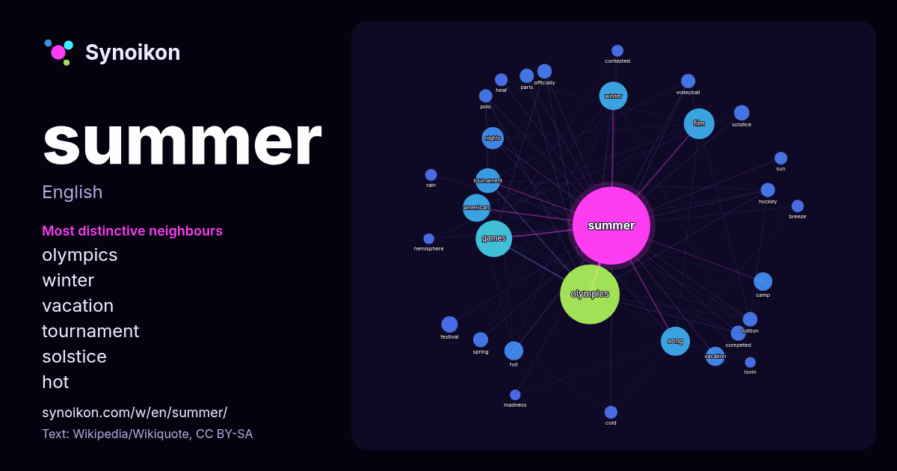

English · word of the day list
summer
The words found around it in 1586 instances from Wikipedia, Wikiquote, Hacker News.

Most distinctive neighbours
- olympics 130×
- winter 39×
- vacation 29×
- tournament 22×
- solstice 20×
- hot 20×
- nights 19×
- camp 16×
- games 16×
- volleyball 15×
- song 14×
- polo 14×
- breeze 13×
- spring 12×
- officially 12×
- competed 11×
- american 11×
- film 11×
- cold 11×
- heat 11×
× = how many times more often than in general Wikipedia text.
Most frequent neighbours
- olympics 280
- games 105
- film 74
- song 67
- winter 63
- american 60
- tournament 49
- album 44
- nights 38
- school 30
- vacation 29
- hot 28
- camp 27
- event 27
- held 24
- season 23
- festival 21
- place 20
- born 19
- solstice 19
In context
- Summer or summertime is the hottest and brightest of the four temperate seasons, occurring after spring and before autumn. Starting on (or around) the Wikipedia snippets · Summer
- Cree Summer Francks (born July 7, 1969) is a Canadian-American actress and singer. In animation, she has voiced characters such as Penny in the first season Wikipedia snippets · Cree Summer
- That Summer! is a 1979 British drama film directed by Harley Cokeliss and starring Ray Winstone, Tony London, Emily Moore and Julie Shipley. It was Ray Wikipedia snippets · That Summer!
- A summer house or summerhouse is a building or shelter used for relaxation in warm weather. This would often take the form of a small, roofed building Wikipedia snippets · Summer house
- Gaines (December 31, 1948 – May 17, 2012), known professionally as Donna Summer, was an American singer and songwriter. She gained prominence during the Wikipedia snippets · Donna Summer
- An Indian summer is a period of unseasonably warm, dry weather that sometimes occurs in autumn in temperate regions of the Northern Hemisphere. Several Wikipedia snippets · Indian summer
- up Indian summer in . An Indian summer is a period of unseasonably sunny, warm weather in autumn. Indian Summer may refer Wikipedia snippets · Indian Summer
- Summer & Summer (traditional Chinese: 熱情仲夏; simplified Chinese: 热情仲夏; pinyin: rè qíng zhòng xià; lit. 'Passionate summer') is a 2007 Taiwanese televis … Wikipedia snippets · Summer & Summer
More words
- art
- autumn
- bell
- bread
- bridge
- cat
- city
- climate
- clock
- death
- desert
- dog
- family
- food
- forest
- garden
- god
- gold
- health
- heart
- history
- honey
- horse
- island
- language
- life
- map
- mirror
- money
- mother
- mountain
- nature
- power
- rain
- road
- salt
- science
- shadow
- silence
- song
- star
- storm
- tea
- time
- train
- truth
- water
- winter
- work
Precomputed on 2026-10-09 with default settings (±5 words, medium corpus). The interactive map can refresh it with live data.